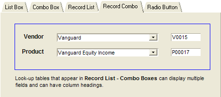

Record List - Combo Box Table Lookup
The Record List - List Box tab of the Table Lookups form contains two list boxes.

Vendor Choices for Record List - Combo Box
The Field Properties Choices tab of the Record List - Combo Box displays the Vendor_Name field and stores the Vendor_No field from the Vendor table. The records are sorted alphabetically by Vendor_Name . The implementation is the same as Described in List Box Table Lookup.
Product Choices for Record List - Combo Box
The Field Properties Choices tab of the Record List - Combo Box displays the Product_Name field and stores the Product_No field from the Product table. The records are sorted alphabetically by Product_Name . The implementation is the same as Described in List Box Table Lookup.
Product Filter for Record List - Combo Box
In addition, the Product_Name records are limited to those where Product_Vendor_No field equals quote_vendor_no_op4 . A change in the Quote_Vendor_No_OP4 field triggers a refresh of the Product list. The implementation is the same as Described in List Box Table Lookup, except that the variable Quote_Vendor_No_OP3 changes to Quote_Vendor_No_OP4.
The Table Lookups sample database can be downloaded.
See Also
Overview of Development Approaches, Using Field Rules for Table Lookups, Using Object Properties for Table Lookups, List Box Table Lookup